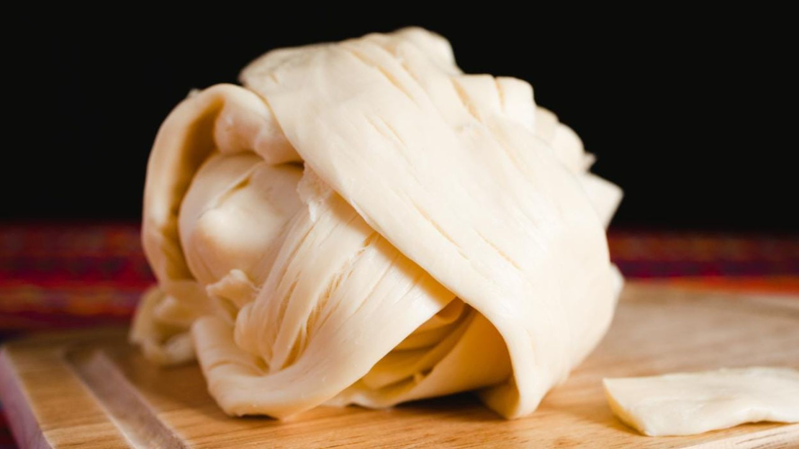
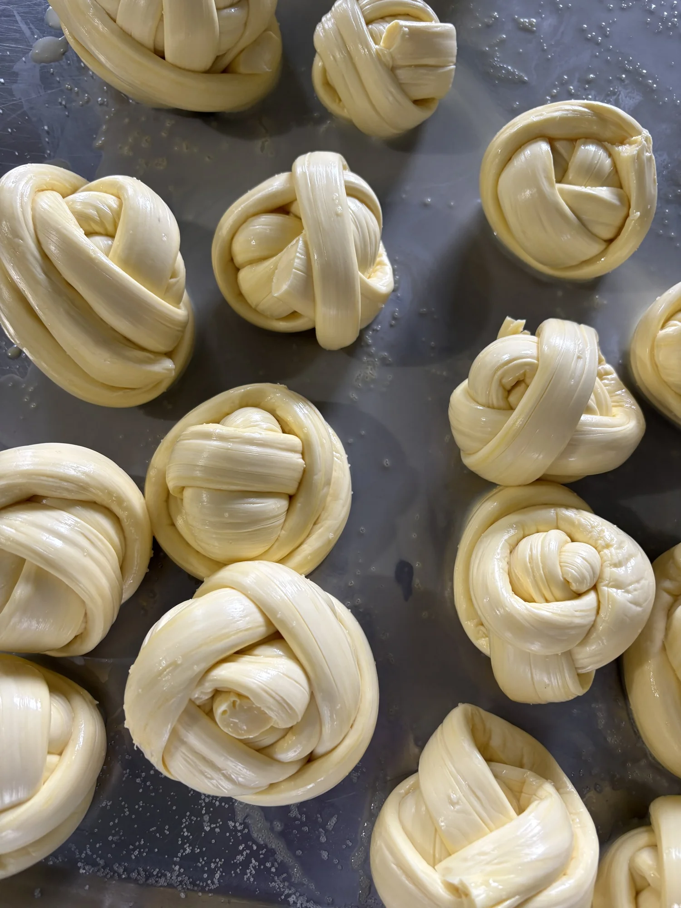
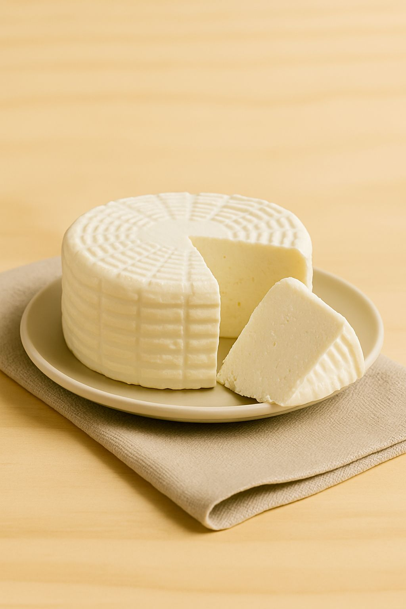
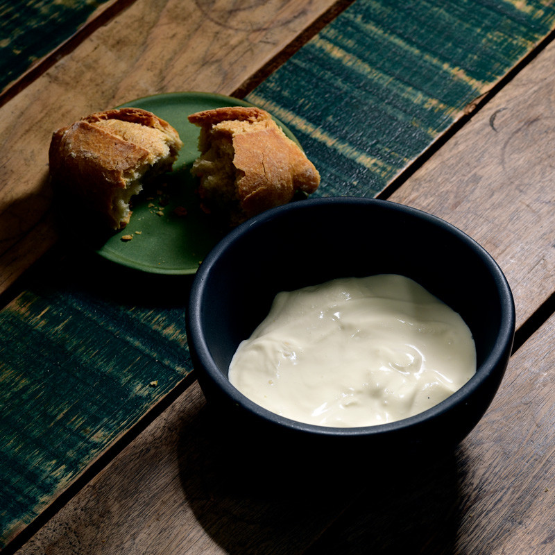
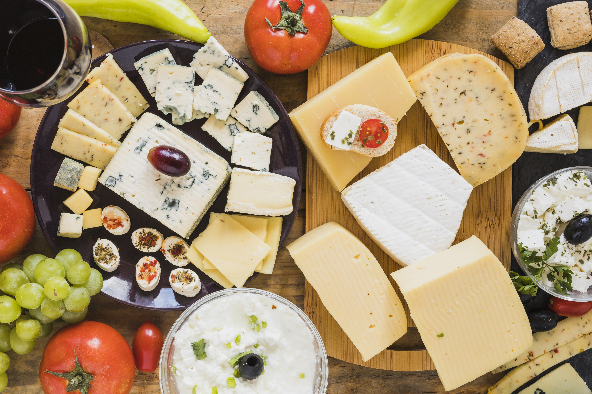
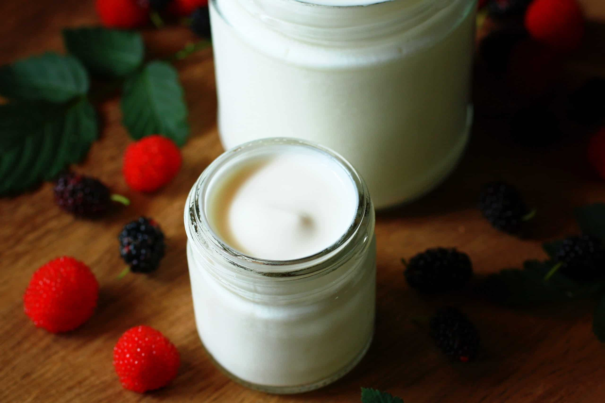
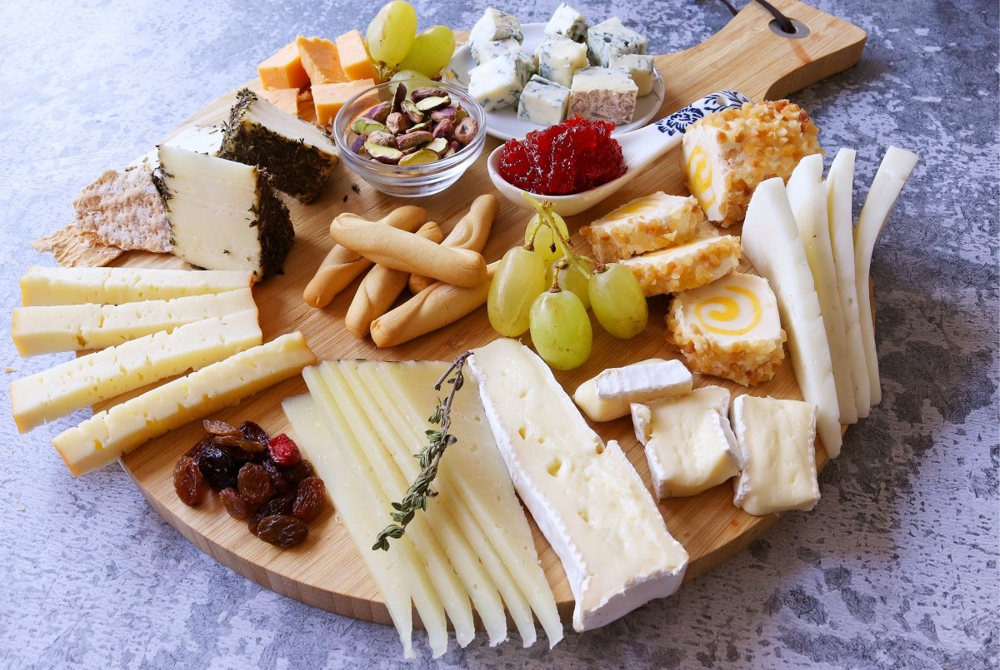

Cómo elegir un buen queso Oaxaca
El queso Oaxaca es uno de los favoritos de la cocina mexicana: se derrite de maravilla, se deshebra fácilmente y combina con casi todo, desde quesadillas hasta tacos y botanas. Pero no todos los quesos son iguales, y saber elegir uno bueno hace toda la diferencia en tu mesa.

Fíjate primero en la apariencia: un buen queso Oaxaca tiene color blanco o ligeramente crema, textura uniforme y se ve húmedo, sin manchas ni bordes resecos. La bola debe sentirse firme pero flexible al tacto.
Aroma y sabor
Su aroma debe ser fresco y lácteo, con un sabor suave y ligeramente salado. Si huele agrio o demasiado fuerte, lo mejor es evitarlo. Pide siempre que te dejen probar un poco antes de llevártelo.

Otro punto importante es la frescura. Los quesos frescos se disfrutan mejor en los primeros días, así que conviene comprar solo lo que vas a consumir durante la semana y preguntar cuándo fue elaborado.
Para conservarlo, guárdalo en el refrigerador envuelto en papel encerado o en un recipiente con tapa, y evita abrirlo y cerrarlo constantemente. Así mantiene su sabor y su textura por más tiempo.
Acompáñalo con tortillas recién hechas, salsa y un poco de crema de rancho, o úsalo para gratinar tus platillos favoritos. Es una opción sencilla para cualquier comida del día.
En Cremería El Ranchito recibimos queso Oaxaca fresco constantemente. Visítanos o haz tu pedido por WhatsApp y llévate el sabor del rancho directo a tu mesa.
3 Comentarios

Cremería El Ranchito
Llevamos el sabor del rancho hasta tu mesa con quesos, lácteos y embutidos frescos.
Deja un comentario
5 ideas fáciles con queso panela

El queso panela es suave, fresco y ligeramente salado, y por eso se lleva bien con casi todo. Además es muy práctico: no necesita preparación y se puede comer solo, a la plancha o en cualquier platillo del día.
Cinco formas de disfrutarlo
1. A la plancha. Dóralo unos minutos por cada lado y sírvelo con salsa verde o roja. Queda dorado por fuera y suave por dentro.
2. En ensalada. Corta cubos y mézclalos con jitomate, pepino, aguacate y un poco de limón. Es una comida ligera y rápida.
3. En tacos o tostadas. Acompáñalo con nopales, frijoles o salsa de tu preferencia.
4. En el desayuno. Con frijoles, tortilla recién hecha y salsa, es una opción sencilla para empezar el día.
5. En brochetas. Alterna cubos de panela con jitomates cherry y hojas de albahaca para una botana fácil de servir en reuniones.
Pásate por Cremería El Ranchito y llévate tu queso panela fresco, o haz tu pedido por WhatsApp.


Cremería El Ranchito
Llevamos el sabor del rancho hasta tu mesa con quesos, lácteos y embutidos frescos.
Deja un comentario
Crema de rancho: ¿por qué sabe tan diferente?

Quien prueba una buena crema de rancho lo nota enseguida: tiene una textura espesa y un sabor cremoso e intenso que hace que cualquier platillo se vea y sepa mejor.
Cómo aprovecharla
Es ideal para acompañar enfrijoladas, chilaquiles, sopas y elotes, o para dar el toque final a unos tacos dorados. Un poco basta para cambiar el sabor del plato.
También combina muy bien con salsas picantes, porque suaviza el picor sin quitarle sabor. Úsala sobre tostadas, pozole o cualquier antojito de la casa.
Cómo conservarla
Guárdala en el refrigerador, bien tapada, y usa siempre una cuchara limpia para servirla. Así dura más tiempo y mantiene su sabor.
En la cremería tenemos cremita de rancho por medio litro. Pregunta por ella en el mostrador.

Cremería El Ranchito
Llevamos el sabor del rancho hasta tu mesa con quesos, lácteos y embutidos frescos.
Deja un comentario
Cómo conservar tus quesos frescos por más tiempo

Los quesos frescos son delicados y se disfrutan mejor cuando se guardan bien. Con unos cuidados sencillos puedes alargar su vida y cuidar su sabor.
Consejos prácticos
Refrigéralos pronto. No los dejes mucho tiempo fuera del refrigerador, sobre todo en días calurosos.
Envuélvelos bien. Usa papel encerado o un recipiente con tapa. Evita dejarlos al aire, porque se resecan y absorben olores.
Usa utensilios limpios. Corta con un cuchillo limpio y no toques el queso con las manos sucias.
Compra lo necesario. Lo mejor es comprar la cantidad que vas a consumir en la semana y pedir uno recién llegado.
Si notas olor agrio, manchas o una textura rara, lo mejor es no consumirlo. En caso de duda, pregúntanos y con gusto te orientamos.
Cremería El Ranchito
Llevamos el sabor del rancho hasta tu mesa con quesos, lácteos y embutidos frescos.
Deja un comentario
Yogurt artesanal: cómo disfrutarlo cada día

El yogurt artesanal es muy versátil: sirve para el desayuno, para un postre o como base de salsas y aderezos. Aquí van algunas ideas para usarlo todos los días.
Ideas para disfrutarlo
En el desayuno. Mézclalo con fruta de temporada, avena o granola para un plato rápido y completo.
En licuados. Agrégalo a tus licuados con plátano, fresa o mango para darles una textura más cremosa.
En salsas. Combínalo con pepino, ajo y limón para un aderezo fresco que va bien con carnes y botanas.
De postre. Sírvelo con miel y un poco de fruta picada, sencillo y rico.
Tenemos yogurt natural por litro. Pídelo en la cremería o por WhatsApp.
Cremería El Ranchito
Llevamos el sabor del rancho hasta tu mesa con quesos, lácteos y embutidos frescos.
Deja un comentario
Tabla de quesos y embutidos para tus reuniones

Una tabla de quesos y embutidos es la forma más fácil de lucirte en una reunión: se arma en pocos minutos y le gusta a todos.
Cómo armarla
Elige variedad. Combina tres o cuatro quesos de sabores y texturas distintas, por ejemplo Oaxaca, panela y alguno más intenso, junto con jamón y otros embutidos.
Agrega acompañamientos. Fruta fresca, nueces, pan o galletas y una salsa o mermelada le dan color y contraste.
Cuida la temperatura. Saca los quesos del refrigerador un rato antes de servir para que se aprecie mejor su sabor.
Ordena con cuidado. Separa cada producto para que se vea limpio y la gente pueda servirse fácil.
En Cremería El Ranchito encuentras todo lo necesario para tu tabla. Visítanos o pide por WhatsApp.
Cremería El Ranchito
Llevamos el sabor del rancho hasta tu mesa con quesos, lácteos y embutidos frescos.
Luis González
Muy buenos consejos, justo el queso Oaxaca que compré salió delicioso.
Responder
Carlos Ruiz
Gracias por compartirlo, ya sé qué revisar la próxima vez que vaya a la cremería.
Responder
Ana Torres
¿Tienen queso Oaxaca disponible los fines de semana?
Responder